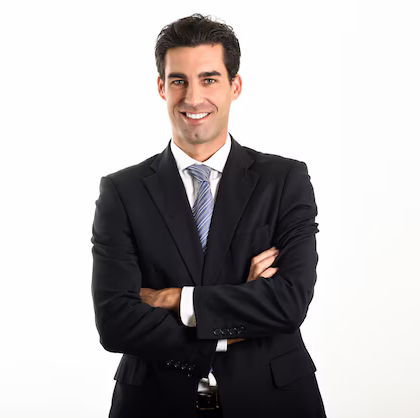

Antonio Fuentes Arquitecto
"Soy arquitecto"
¡Hola!, gracias por leer mi currículum. Como dice el título, me llamo Antonio Fuentes Arquitecto, y curiosamente también soy arquitecto. Desde pequeño, siempre supe lo que quería hacer, y luché por ello hasta conseguirlo. Actualmente estoy sin trabajo, ¡pero no me faltan ganas de trabajar de nuevo! A continuación dejo mi información de contacto, así como algunos de mis pasados proyectos, de los que me siento muy orgulloso.
- Contacto: +758456927
- Formación
- Acerca de
Trabajos

Construcción de cabañas inteligentes en Kiribati
Mi última obra, la Quinta Torre de Madrid
Estas dos imágenes corresponden a los dos trabajos de los que más orgulloso estoy. En la primera imágen, fui enviado por Elon Musk a Kiribati, una pequeña isla del Pacífico, para diseñar e implementar un diseño de cabañas de última tecnología, totalmente limpias energéticamente. además de capaces de soportar la subida del nivel del mar, crítica en los años venideros en esta parte del planeta.
En la segunda imagen, mi último trabajo, la Quinta Torre de Madrid. ¿Eres uno de esos que en los últimos años comenzó a extrañarse cuando apareció otra torre junto a las míticas Cuatro Torres de Madrid? Pues yo fui el causante, contratado por Ayuso para darle a la ciudad un toque más moderno.
Reseñas
Isabel Díaz Ayuso:
"Nunca me arrepentiré de haber confiado en Antonio para este gran proyecto.""Gracias a él la ciudad tiene un toque mucho más moderno"
Elon Musk:
(Traducido): "Gracias a Antonio pude implementar mi tecnología de cabañas que tantas vidas salvará en el futuro""Volvería a contratar a Antonio"